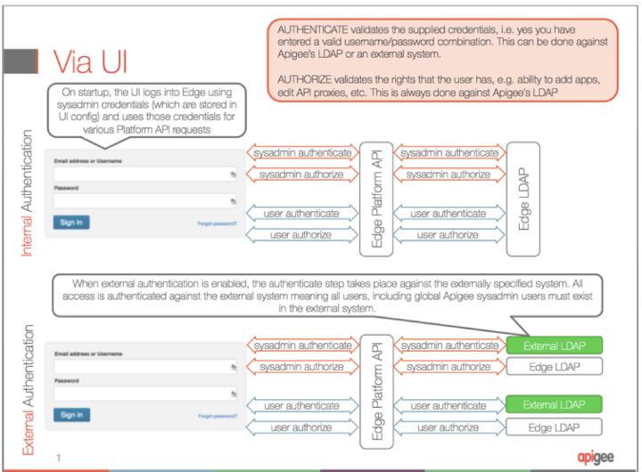
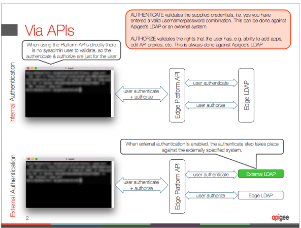

Understanding Edge authentication and authorization flows
Edge for Private Cloud v. 4.17.05
This document explains how authentication and authorization work on Apigee Edge. This information may provide useful context when you configure an external LDAP with Apigee Edge.
The authentication and authorization flows depend whether a user authenticates through the management UI or through the APIs.
When logging in through the UI
When you log in to Edge through the UI, Edge performs a separate login step to the Apigee Management Server using the Edge global system administrator credentials.
The following UI login steps are illustrated in Figure 1:
- The user enters login credentials in the login UI.
- Edge logs in to the Management Server using the global system admin credentials.
- The global system admin credentials are authenticated and authorized. The UI uses these credentials to make certain platform API requests.
- If external authentication is enabled, the credentials are authenticated against the external LDAP, otherwise, the internal Edge LDAP is used.
- Authorization is always performed against the internal LDAP.
- The credentials entered by the user are authenticated and authorized.
- If external authentication is enabled, the credentials are authenticated against the external LDAP, otherwise, the internal Edge LDAP is used.
- Authorization is always performed against the internal LDAP.
�
The following image shows authorization and authentication through the Edge UI:

When logging in through APIs
When you log in to Edge through the an API, only the credentials entered with the API are used. Unlike with UI login, a separate login with system admin credentials is not needed.
The following API login steps are illustrated in Figure 2:
- The user enters login credentials in the login UI.
- The credentials entered by the user are authenticated and authorized.
- If external authentication is enabled, the credentials are authenticated against the external LDAP, otherwise, the internal Edge LDAP is used.
- Authorization is always performed against the internal LDAP.
The following image shows authorization and authentication through the Edge APIs:
